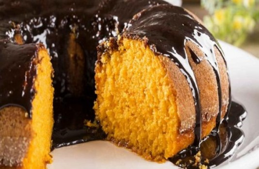

 Mussum Ipsum, cacilds vidis litro abertis. Aenean aliquam molestie leo, vitae iaculis nisl. Leite de capivaris, leite de mula manquis sem cabeça. Si num tem leite então bota uma pinga aí cumpadi! Todo mundo vê os porris que eu tomo, mas ninguém vê os tombis que eu levo!
Dificuldade: Fácil | 68 visitas / 5 estrelas | Porção: 8 pessoas
Desenvolvido por TDS1 - Fiap © 2019